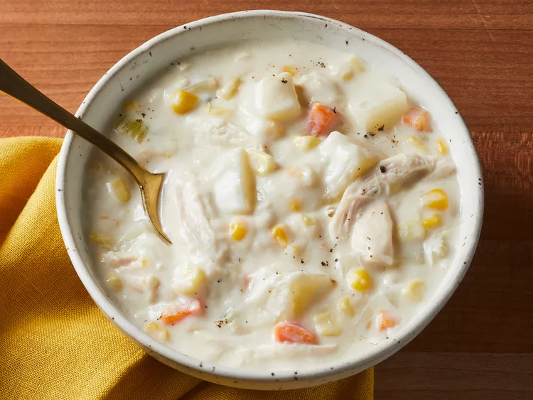

Easy Chicken and Corn Chowder

This chicken corn chowder is super easy to make quickly on the stovetop. I use store-bought rotisserie chicken and shred the breast meat to save time, but you are more than welcome to cook your own meat. You can also precook the potatoes to speed up the recipe.
ingredients
- ½ cup butter
- 1 small onion, finely diced
- 1 small carrot, finely diced
- 1 rib celery, diced
- 1 clove garlic, minced
- ½ cup all-purpose flour
- 4 russet potatoes, diced
- 2 rotisserie chicken breast halves, shredded
- 1 ½ cups white corn kernels
- 1 ½ cups yellow corn kernels
- 4 cups chicken stock, divided
- 2 ½ cups half-and-half
- 1 pinch nutmeg
- 1 teaspooon salt, or to taste
- ½ teaspooon ground black pepper, or to taste
Steps
- Melt butter in a large saucepan over medium heat; cook and stir onion, carrot, celery, and garlic in hot butter until slightly softened, about 2 minutes.
- Stir flour into mixture to make a paste; cook until lightly browned and flour gives off a slightly toasted smell, about 5 minutes. Watch carefully, as flour burns easily. Remove saucepan from heat and set aside to cool slightly.
- Meanwhile, stir together potatoes, chicken, white and yellow corn, and 3 cups stock in a large soup pot over medium heat.
- Whisk remaining 1 cup stock into vegetables and flour mixture until thoroughly combined. Stir mixture into the soup pot; bring to a simmer. Cook and stir until thick, about 5 minutes.
- Stir half-and-half, nutmeg, salt, and black pepper into chowder. Bring to a boil, reduce heat to low, and simmer until potatoes are tender, about 20 minutes.
Back to Home